What makes a good brand campaign?
For Bullish, CoinDesk and Consensus
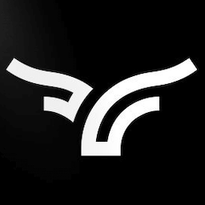
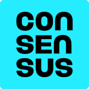
Thomas Stevenson
A good campaign looks correct, proper and expected.
A memorable one makes people feel something.
An unlikely lens nobody else in the category chose.
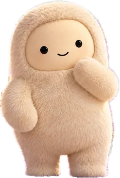
Museby Meta
Agents are the most abstract product in tech.
#1 App Store · Free appsMeta gave the “AI” thing a body.
A body does three jobs a logo can’t
Explains
Invites
Accumulates
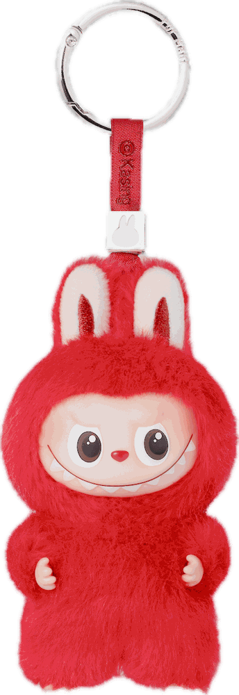
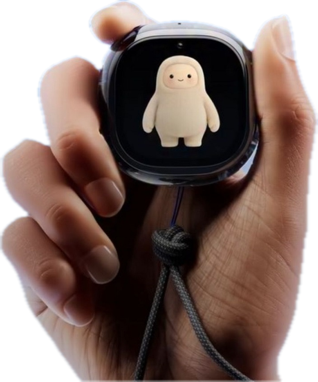
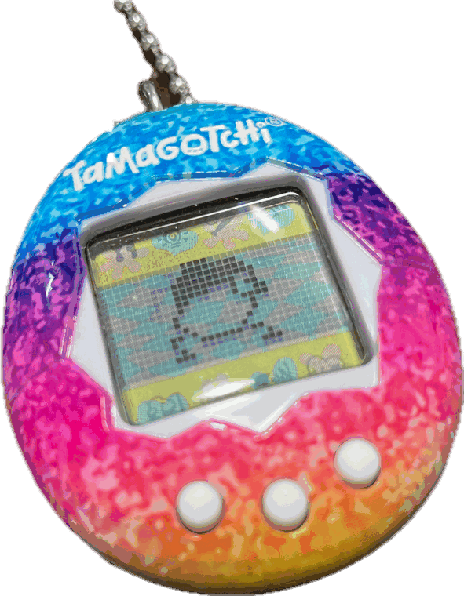
Not because it’s cute.
Because it’s current.
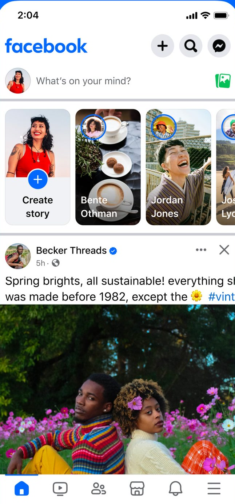
Facebook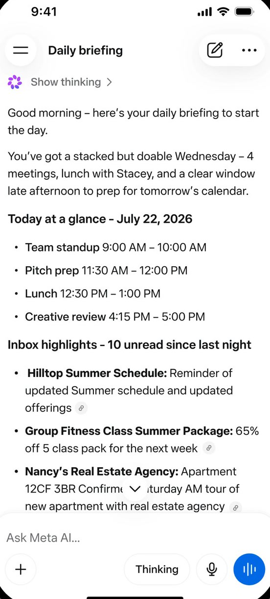
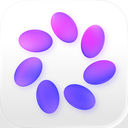
Meta AI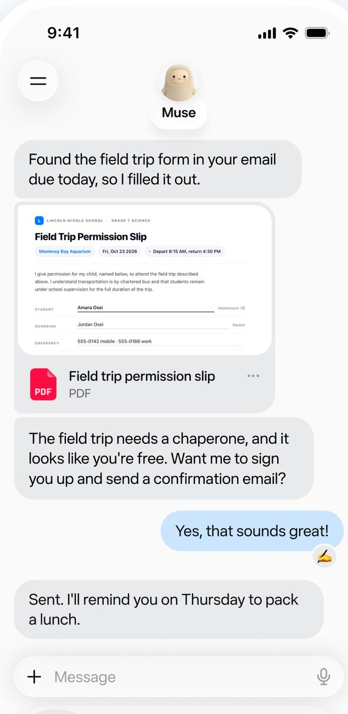
MuseThe house stayed, and one product got a soul.
Does every product in your house have to look like the parent?
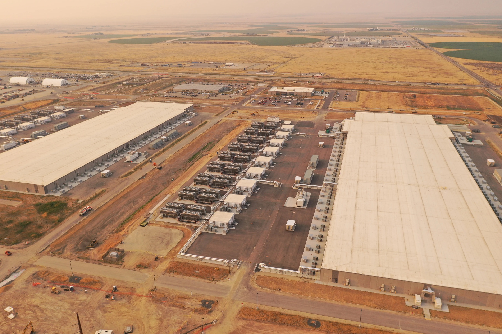
Seven in ten Americans oppose an AI data center in their area.
Can you really be mad that this little guy has a data center?
Gallup · March 2026
- NBC NewsIt’s cute. It’s cuddly. And it wants your data.
- Creative BloqMeta’s new AI avatar is making me feel infantilised
- FortuneA Clippy marketing moment with Muse
A logo nobody minds is a logo nobody notices.
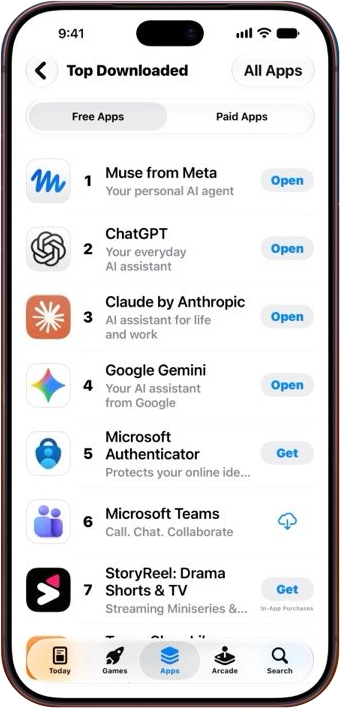
A case study, a mood board, or a conversation?
Open-ended.
Four questions · every brief
- 01How should it feel?
- 02What lens would nobody else choose?
- 03Do the name and the body agree?
- 04Muse or siren?
Drawn by hand, once
Figma Weave
One toolComms London
Sales Hong Kong
Events Grand Cayman